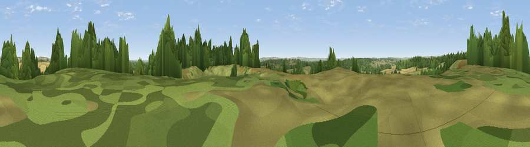

Black Hill
#24159 in England · top 49% of its area beats it · near Bere RegisThe view, rendered

A 360° render of this exact spot computed from the terrain model, tree cover and land cover — summer colours, afternoon light, calibrated against photographs of famous viewpoints. Real trees, hedges and buildings will differ in detail.
The panorama
Grey silhouette: terrain skyline in each direction (720 bearings, Earth curvature and refraction included). Dashed green: skyline with trees (+15 m) and buildings (+8 m) as obstacles. Blue strip: how far the ground is visible on each bearing.
Where the view opens
Wedge length = distance to the farthest visible ground on that bearing (vegetation-aware). Rings at 10, 25 and 50 km.
What fills the view
48% grassland · 28% woodland · 23% cropland ·
Angular shares of the visible panorama (visual magnitude), not map area. Landscape diversity 0.47 (0–1 Shannon).
Key numbers
More beautiful places nearby
The staircase of upgrades: each row has a higher view potential than everything closer. Driving times are estimates from straight-line distance, calibrated against real road routing — check an actual route before setting out.
| Place | Direction | Drive | Score |
|---|---|---|---|
| Viewpoint near Bere Regis | SE · 0 km | ~1 min | 50.7 |
| Viewpoint near Bere Regis | ENE · 2 km | ~5 min | 56.1 |
| Viewpoint near Winterborne Houghton | NNW · 10 km | ~19 min | 59.9 |
| Viewpoint near Milton Abbas | NNW · 10 km | ~19 min | 64.2 |
| Viewpoint near Melcombe Bingham | NW · 12 km | ~23 min | 66.8 |
| Viewpoint near Melcombe Bingham | NW · 13 km | ~23 min | 70.5 |
| Viewpoint near Woolland | NNW · 13 km | ~24 min | 74.5 |
| Whiteway Hill | SSE · 14 km | ~25 min | 85.0 |
50.74642, -2.23136 · source: osm peak · position refined by local search. Computed location — check access rights before visiting.